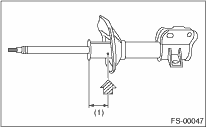

FRONT SUSPENSION > Front Strut
CAUTION:
• Before handling struts filled with gas, be sure to wear goggles to protect eyes from gas, oil and metal shavings.
• Do not disassemble the strut damper or throw into flames.
• When discarding gas filled struts, drill holes in them to purge the gas.
1. Place the gas-filled strut on a level surface with the piston rod fully extended.
2. Using a 2 — 3 mm (0.079 — 0.12 in) dia. drill, make the holes in areas shown in the figure.

|
(1) |
40 mm (1.57 in) |